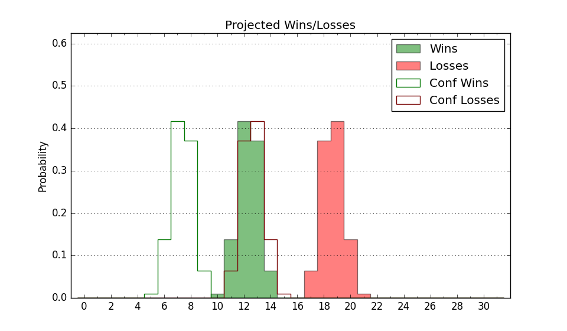

| Home | Game Probabilities | Conferences | Preseason Predictions | Odds Charts | NCAA Tournament |
| City: | San Luis Obispo, California | |
| Conference: | Big West (9th)
| |
| Record: | 5-11 (Conf) 10-17 (Overall) | |
| Ratings: | Comp.: -4.5 (216th) Net: -4.5 (215th) Off: 106.9 (161st) Def: 111.4 (270th) SoR: 0.0 (116th) |
| Remaining | ||||||
|---|---|---|---|---|---|---|
| Date | Opponent | Win Prob | Pred. | |||
| 2/27 | @ UC Santa Barbara (113) | 17.7% | L 74-85 | |||
| 3/1 | Cal St. Bakersfield (239) | 71.0% | W 85-79 | |||
| 3/6 | Cal St. Fullerton (338) | 88.0% | W 88-73 | |||
| 3/8 | @ Long Beach St. (301) | 56.4% | W 80-78 | |||
| Previous | Game Score | |||||
| Date | Opponent | Win Prob | Result | Off | Def | Net |
| 11/5 | @San Francisco (62) | 7.5% | L 78-86 | 1.6 | 13.6 | 15.3 |
| 11/7 | @California (109) | 16.4% | L 73-91 | -9.1 | -5.0 | -14.2 |
| 11/14 | Seattle (163) | 54.3% | W 75-71 | -7.5 | 12.8 | 5.3 |
| 11/17 | @Eastern Washington (247) | 42.9% | W 82-78 | -5.7 | 13.8 | 8.1 |
| 11/20 | @Arizona St. (58) | 6.9% | L 89-93 | 19.7 | -0.7 | 18.9 |
| 11/23 | @Saint Mary's (20) | 2.7% | L 66-80 | 2.5 | 11.7 | 14.2 |
| 11/26 | Grambling St. (324) | 85.1% | W 82-79 | 2.7 | -16.3 | -13.5 |
| 11/30 | @Stanford (87) | 11.6% | W 97-90 | 22.2 | 4.2 | 26.4 |
| 12/5 | @UC Davis (224) | 37.1% | L 66-77 | -19.3 | 6.3 | -13.0 |
| 12/7 | Cal St. Northridge (108) | 39.9% | L 91-102 | 2.2 | -16.3 | -14.1 |
| 12/14 | @San Jose St. (158) | 25.4% | L 100-107 | 5.9 | -4.3 | 1.5 |
| 12/17 | Denver (300) | 81.3% | W 95-94 | -5.7 | -12.0 | -17.6 |
| 12/21 | @Nebraska Omaha (182) | 29.8% | L 82-86 | 2.8 | -2.5 | 0.3 |
| 1/2 | UC Irvine (73) | 24.6% | L 89-98 | 1.9 | -0.8 | 1.1 |
| 1/4 | @Hawaii (209) | 34.2% | L 55-68 | -19.5 | 2.9 | -16.5 |
| 1/9 | @UC San Diego (44) | 4.6% | L 68-95 | 4.8 | -11.9 | -7.2 |
| 1/11 | UC Santa Barbara (113) | 42.4% | L 72-75 | 3.2 | -4.6 | -1.5 |
| 1/16 | UC Davis (224) | 66.8% | L 54-65 | -17.7 | -8.3 | -26.0 |
| 1/18 | @UC Irvine (73) | 8.7% | L 71-101 | -2.4 | -15.7 | -18.1 |
| 1/25 | Long Beach St. (301) | 81.5% | W 78-69 | -6.0 | 5.9 | -0.1 |
| 1/30 | @Cal St. Bakersfield (239) | 41.8% | W 90-81 | 11.2 | 4.5 | 15.7 |
| 2/1 | @UC Riverside (149) | 23.9% | L 62-80 | -12.4 | 3.6 | -8.8 |
| 2/6 | Hawaii (209) | 63.8% | W 79-63 | 7.4 | 9.8 | 17.2 |
| 2/13 | @Cal St. Fullerton (338) | 68.3% | W 98-83 | 4.3 | 6.8 | 11.1 |
| 2/15 | @Cal St. Northridge (108) | 16.3% | L 85-89 | -0.2 | 11.2 | 10.9 |
| 2/20 | UC San Diego (44) | 14.0% | L 67-81 | -8.4 | -4.5 | -12.9 |
| 2/22 | UC Riverside (149) | 51.6% | W 112-100 | 13.5 | -6.6 | 6.9 |
| Stats & Trends | |||||
|---|---|---|---|---|---|
| Current | Day | Week | Month | Season | |
| Composite | -4.5 | -0.0 | -0.1 | +2.6 | +12.4 |
| Comp Rank | 216 | -2 | -3 | +21 | +121 |
| Net Efficiency | -4.5 | -0.0 | -0.2 | +2.1 | -- |
| Net Rank | 215 | -1 | -1 | +16 | -- |
| Off Efficiency | 106.9 | +0.0 | +0.4 | +1.3 | -- |
| Off Rank | 161 | +1 | +1 | +13 | -- |
| Def Efficiency | 111.4 | -0.0 | -0.6 | +0.8 | -- |
| Def Rank | 270 | -2 | -7 | +19 | -- |
| SoS Rank | 97 | -1 | -- | -29 | -- |
| Exp. Wins | 12.3 | +0.0 | +0.3 | +1.9 | +4.3 |
| Exp. Conf Wins | 7.3 | +0.0 | +0.3 | +1.9 | +1.6 |
| Conf Champ Prob | 0.0 | -- | -- | -- | -0.2 |

| Advanced Stats | ||
|---|---|---|
| Stat | Value | Rank |
| Off Eff FG % | 0.549 | 70 |
| Off Ast Ratio | 0.151 | 142 |
| Off ORB% | 0.276 | 218 |
| Off TO Rate | 0.186 | 358 |
| Off FT Ratio | 0.269 | 331 |
| Def Eff FG % | 0.535 | 269 |
| Def Ast Ratio | 0.148 | 186 |
| Def ORB% | 0.327 | 321 |
| Def TO Rate | 0.149 | 163 |
| Def FT Ratio | 0.315 | 143 |